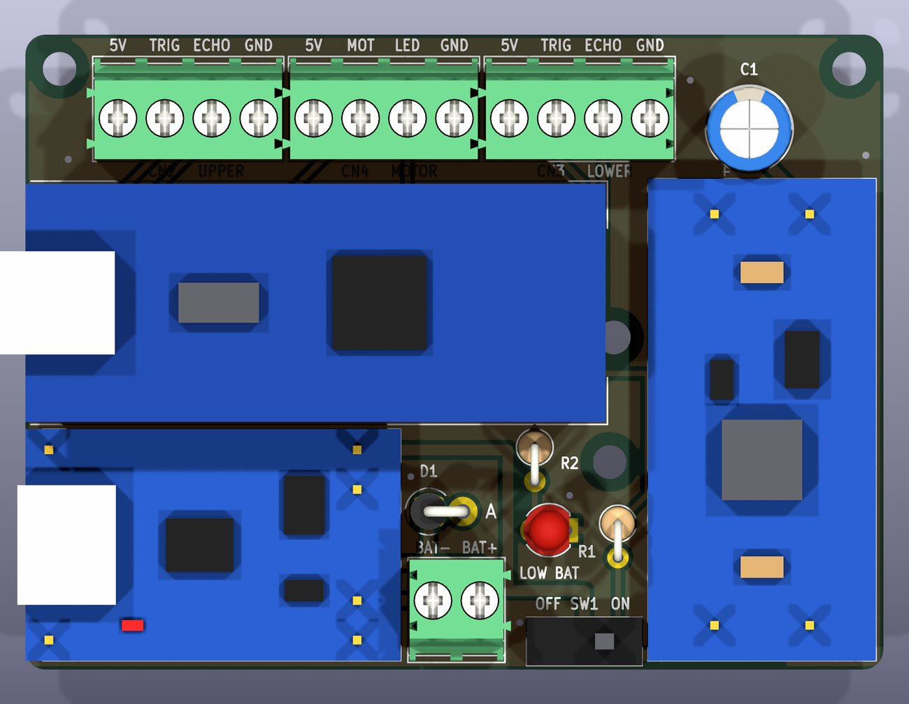
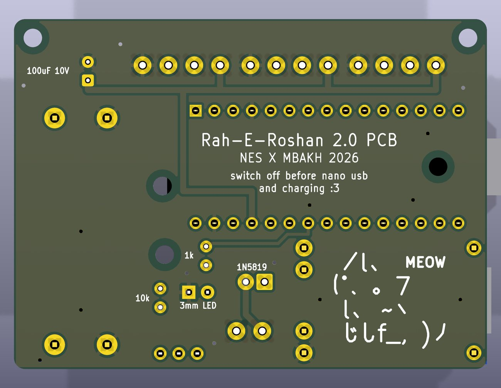

Rah E Roshan 2.0
PCBs I designed to optimize the electrical system on a smart cane for blind people. More detail on this soon.

what it is
A white cane only finds what it touches, so a low branch, an open shutter or a parked vehicle at chest height doesn't get found until you've already walked into it. This cane has two ultrasonic sensors watching the space ahead, and it warns you with vibration in the handle instead of sound, because your hearing is already busy on a street.
For 2.0 I designed the board that all of that runs on. It sits inside the handle.
what's on the board
- Brain: an Arduino Nano V3 on sockets, with its USB port at the edge of the board so it can be reprogrammed without taking everything apart
- Power: a TP4056 USB-C charger with battery protection, and an MT3608 boost converter that holds a 5 V rail off a single 3.7 V Li-Po
- Sensors: two HC-SR04s, one at the handle and one down the shaft on a cable about a metre long
- Feedback: an HW-738 vibration module
- Small stuff: a low battery LED, a battery sense line to the Nano, and a 1N5819 across the battery that only conducts if it gets plugged in backwards

how it's laid out
- Everything electrical lives at the handle so the cane stays light at the tip. Only the lower sensor runs down the shaft
- The power switch sits after the charger, so the cane can charge overnight while it's switched off
- System ground starts at the charger's OUT- instead of the battery negative, because grounding anything to the battery side bypasses the protection chip
The whole board comes out of a Python script using KiCad's own API: footprints, placement, routing, 3D models, gerbers, and a 1:1 PDF you can print and lay the real modules on to check they fit. The design rule check comes back with zero violations.
